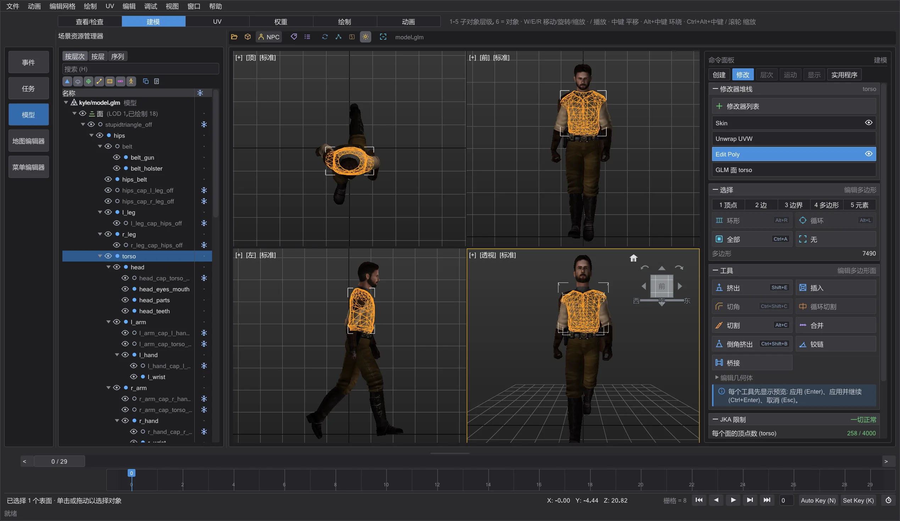
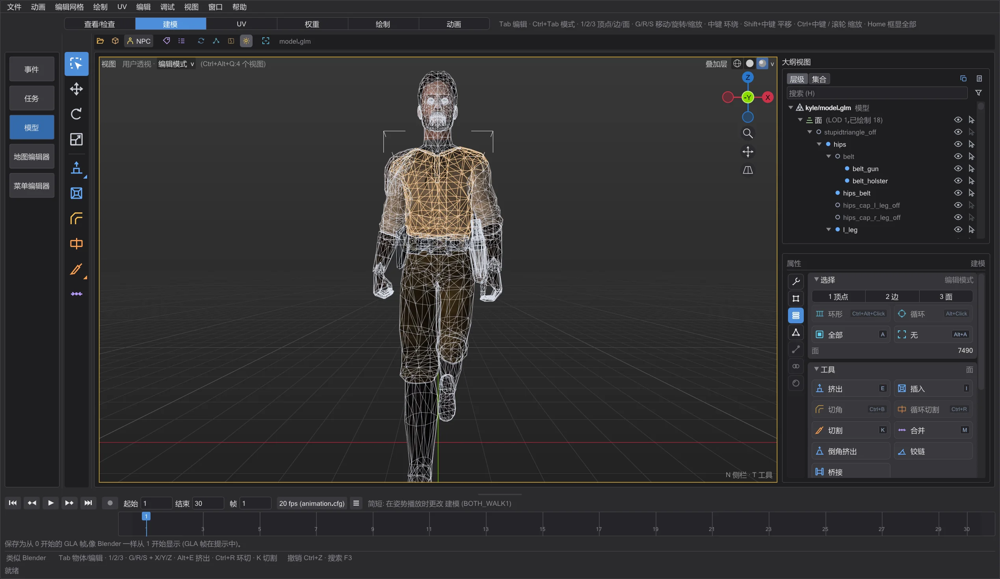
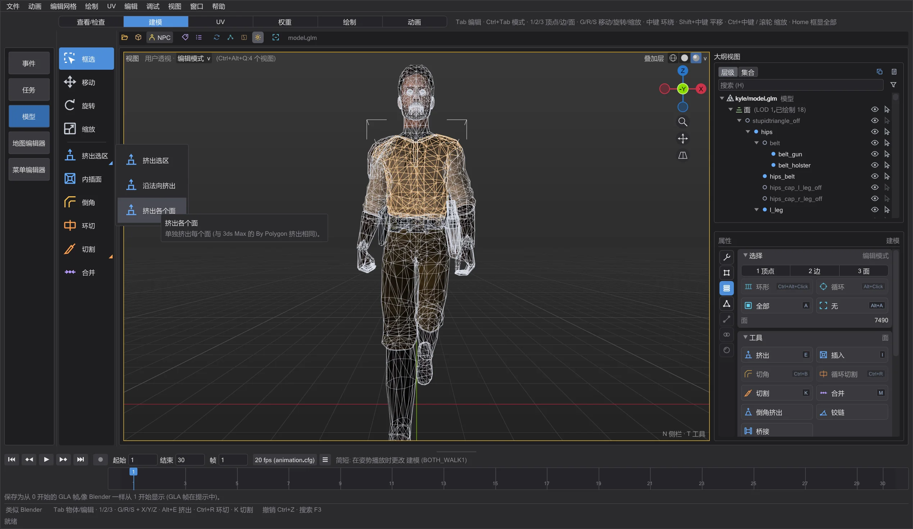
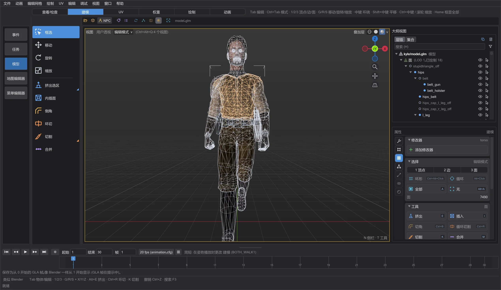
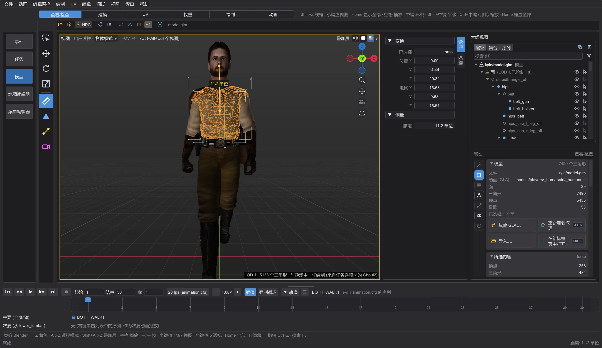
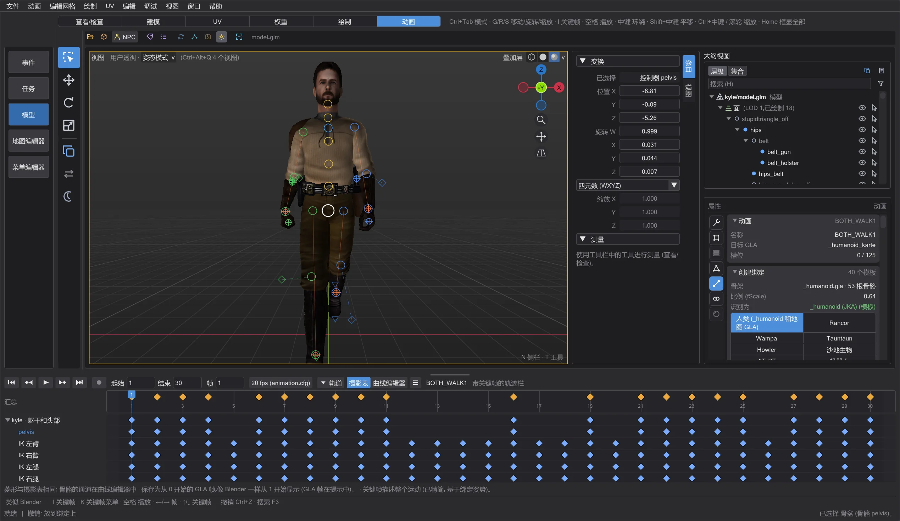

模型选项卡: 像 Blender 的布局
操作模式不仅改变按键, 也改变外观: 像 3ds Max 时左侧是场景资源管理器, 右侧是命令面板; 像 Blender 时左侧是工具栏, 右上方是大纲视图, 其下是属性, 按 N 打开侧栏。


工具栏 (T)#
像 Blender 时, 左侧一栏是 工具栏。顶部是每个区域都有的四个工具: 框选、移动、旋转 和 缩放 (它们选择所选内容处的操纵器; G、R、S 无需操纵器)。分隔线下面是该区域的工具: 查看/检查为 测量、选择面、选择骨骼 和 照片……; 建模为 挤出选区、内插面、倒角、环切、切割、合并; UV 为 标记缝合边、展开、松弛、拼排孤岛; 权重为 笔刷、模糊、梯度渐变、采样权重; 绘制为 笔刷、填充、克隆、涂抹、遮罩; 动画为 复制姿态、粘贴 X 轴向翻转姿态、将帧精简为关键帧。所选工具会突出显示; 工具提示给出按键。按 T 隐藏工具栏 (一个小箭头可将其找回), 再按 T 显示。每个工具也仍在原处: 右侧面板、菜单、“搜索所有操作”和视图的右键菜单中。

工具组与工具名称#
工具名称与 Blender 相同, 在 Blender 已翻译的语言中使用 Blender 自己的用词。与 Blender 一样, 有些工具组成一个组: 按钮角上的小三角表示这一点。短按单击使用显示的工具; 按住按钮 0.2 秒或从按钮拖开会打开该组, 在某个条目上松开即选择它 - 之后按钮显示该工具。建模中有 挤出选区 组 (含 沿法向挤出 和 挤出各个面) 和 切割 组 (含 切分)。右键单击工具栏可选择 显示工具名称: 工具栏变宽, 每个工具旁显示名称。程序会记住此选择。
与 Blender 一样, 可以在工具栏右边缘拖动将其加宽: 宽度不超过 120 点时只显示图标, 更宽时在图标旁显示工具名称。宽度会保留到下次启动; 双击边缘恢复窄工具栏。右键菜单中的 显示工具名称 仍可在任何宽度下显示名称。

模式、大纲视图和属性#
视图标题像 Blender 一样给出视图名称, 其后是该区域的模式: 查看/检查为 物体模式, 建模和 UV 为 编辑模式, 以及 权重绘制、纹理绘制, 动画为 姿态模式。单击模式可打开模式选择 (与 Ctrl+Tab 相同) 并切换区域。右侧的 大纲视图 显示与场景资源管理器相同的树, 开关位于右侧的列中; 其下的 属性 编辑器以选项卡列显示该区域的各组。两者之间的边界可以拖动。

侧栏 (N) 与测量#
按 N 在视图右侧打开 侧栏。条目 选项卡显示所选内容: 面为位置和尺寸, 骨骼或绑定控制器为姿势中的位置和旋转, 另外还有最近一次测量。与 Blender 一样, 这些值是数字字段: 左右拖动可更改, 单击可输入数值 (Enter 确认, Esc 取消); Ctrl+Z 一步撤销一次输入。面会随之移动或缩放, 动画区域 (姿态模式) 中的绑定控制器会在变换控件允许的范围内移动和旋转; 姿态模式之外的骨骼与 Blender 一样仅供查看。视图 选项卡设置视野, 并在透视和正交之间切换。测量 工具在模型上测量: 单击两个点, 或从一点拖到另一点。像 3ds Max 时, 同一工具以 测量距离 出现在“搜索所有操作”和右键菜单中。每种操作模式都保留自己的窗口布局: 在 Blender 模式下移动、隐藏或取出的内容, 切换到 3ds Max 再切回后保持不变。切换时所选内容、序列和帧保持不变。
侧栏中的骨骼: 对于骨骼或绑定控制器, 侧栏像 Blender 一样显示局部值 - 相对于骨骼静止位置 (.gla 的基础姿态) 的位置、旋转和缩放, 使用骨骼自身的轴。在静止位置它们为 0、无旋转和 1。旋转按骨骼的旋转模式显示: 四元数 (WXYZ) (Blender 的默认值)、六种欧拉顺序之一或 坐标轴角度; 下方的 旋转模式 字段可为此骨骼切换模式。模式只改变显示和输入 - 游戏以矩阵保存姿态。缩放仅供查看: 绑定不缩放骨骼。

像 3ds Max 时, 选择骨骼 与 测量距离 一样是开关: “搜索所有操作”和视图的右键菜单可开关它 (菜单中带勾选标记), 开启期间视图顶部会显示提示。Q、W、E、R 会结束它, 从像 Blender 切换到像 3ds Max 时也会结束。